O problema
Nem todos equipamentos possuem contrato de manutenção o intuito dessa solução e mensurar qual e o impacto se esse equipamento que parar precisar de uma manutenção.
acredito que não e feito um acompanhamento via alguma ferramenta.
Tem equipamentos se parar para o setor inteiro.
AS-IS · o processo antes do MVP
O caminho real, com quem faz, o que entra, onde espera e o que é automatizável. Fonte: tabela AS-IS do projeto.

Fluxograma AS-IS · amarelo: etapa manual; tracejado: ponto de espera. Os números correspondem à tabela. Fonte Mermaid.
| Etapa | Quem faz | Entra | Ação | Sai | Sistema | Regra | Onde espera | Tempo | Automatizável |
|---|---|---|---|---|---|---|---|---|---|
| Identificar o defeito | Servidor da unidade | Equipamento com defeito | Percebe a falha e avisa a chefia | Aviso por e-mail ou telefone | E-mail e telefone | Equipamento parado ou com falha | Até a chefia ver o aviso | A medir | Pouco |
| Verificar o contrato | Chefia da unidade | Aviso do defeito | Procura se o equipamento tem contrato de manutenção vigente | Com ou sem contrato | Pastas e PDFs de contratos | Contrato vigente aciona o fornecedor | Busca de documentos | A medir | Sim, com regra clara |
| Providenciar a manutenção | Chefia da unidade | Situação do contrato | Aciona o fornecedor ou pede orçamento e abre a contratação | Manutenção solicitada | E-mail e processo de contratação | Sem contrato: orçamento e contratação | Orçamento e contratação | A medir | Pouco |
| Executar a manutenção | Fornecedor | Solicitação | Conserta ou substitui o equipamento | Equipamento operando e comprovante | Externo | Prazo do contrato, quando houver | Agenda do fornecedor | A medir | Não |
| Arquivar o comprovante | Chefia da unidade | Comprovante de manutenção | Guarda o comprovante em papel ou PDF | Comprovante arquivado | Pasta física ou digital | Guardar o comprovante | Não identificado | A medir | Sim, com apoio humano |
| Consolidar o impacto | Coordenadoria de qualidade | Informações das unidades | Tenta reunir equipamentos, paradas e custos numa planilha | Planilha parcial | Planilha | Sem regra definida | Retorno das unidades | A medir | Sim, com regra clara |
TO-BE · o processo com o MVP
O que muda em cada etapa, quem passa a fazer e o ganho esperado. Fonte: tabela TO-BE do projeto.

Fluxograma TO-BE · verde: máquina (automação local); azul: pessoa (fé pública). Fonte Mermaid.
Quando o app existir, a coordenadoria vê no mapa de MT cada equipamento da POLITEC, sabe quais estão sem contrato e quanto custa, por dia, a parada de cada um, por unidade e por diretoria.
- Cadastrar equipamentos e contratos
Base única com fotos, contrato e criticidade
A pessoa assistida pela máquinaSaber o que existe e onde - Registrar a parada
A unidade abre e fecha a parada no app
A pessoa assistida pela máquinaHistórico de paradas - Calcular risco e custo de parada
O app calcula por equipamento, unidade e diretoria
A máquina (automação)Decisão com número - Alertar contratos a vencer
Aviso 60 dias antes do fim
A máquina (automação)Nenhum contrato vence sem aviso - Consolidar as unidades
A coordenadoria importa os arquivos e o app mescla
A pessoa assistida pela máquinaVisão do estado - Ver no mapa e no Google Earth
Mapa offline e exportação .kmz
A máquina (automação)Localização de cada equipamento - Decidir a contratação
A chefia decide com o relatório de exposição
A pessoa, sem mudançaPrioridade pelo custo
| Etapa | O que muda | Quem faz | Benefício | Esforço |
|---|---|---|---|---|
| Cadastrar equipamentos e contratos | Base única com fotos, contrato e criticidade | A pessoa assistida pela máquina | Saber o que existe e onde | Médio |
| Registrar a parada | A unidade abre e fecha a parada no app | A pessoa assistida pela máquina | Histórico de paradas | Baixo |
| Calcular risco e custo de parada | O app calcula por equipamento, unidade e diretoria | A máquina (automação) | Decisão com número | Médio |
| Alertar contratos a vencer | Aviso 60 dias antes do fim | A máquina (automação) | Nenhum contrato vence sem aviso | Baixo |
| Consolidar as unidades | A coordenadoria importa os arquivos e o app mescla | A pessoa assistida pela máquina | Visão do estado | Médio |
| Ver no mapa e no Google Earth | Mapa offline e exportação .kmz | A máquina (automação) | Localização de cada equipamento | Médio |
| Decidir a contratação | A chefia decide com o relatório de exposição | A pessoa, sem mudança | Prioridade pelo custo | Baixo |
O que o MVP entrega
Tela-assinatura: Mapa de MT em SVG com os pinos das unidades.
Menu do MVP: MapaPainelEquipamentosUnidadesContratosParadasImportarExportarConfiguração
Regras de negócio
| ID | Regra | Quando | Tipo | Exceção |
|---|---|---|---|---|
RN01 | Ponto único de falha: criticidade maior ou igual a 4 e sem equipamento igual na unidade | No cálculo do risco | Cálculo | Nenhuma |
RN02 | Custo diário de parada = atendimentos perdidos por dia × valor de referência + custo alternativo por dia | Ao registrar a parada | Cálculo | Sem números da parada: usa os da unidade |
RN03 | Custo da parada = custo diário × dias úteis parados; parada aberta conta até hoje | No painel e na ficha | Cálculo | Nenhuma |
RN04 | Risco = criticidade × 2 (se sem contrato) × 2 (se ponto único de falha) | No mapa e no painel | Cálculo | Nenhuma |
RN05 | Contrato vigente quando início ≤ hoje ≤ fim; alerta 60 dias antes do fim | Diariamente ao abrir o app | Negócio | Nenhuma |
RN06 | MTTR = média de conclusão − abertura das manutenções corretivas | No painel | Cálculo | Nenhuma |
RN07 | Disponibilidade = 1 − horas paradas ÷ horas úteis do período | No painel | Cálculo | Nenhuma |
RN08 | Coordenada fora do contorno de MT é recusada | No cadastro da unidade | Validação | Nenhuma |
RN09 | Não registrar CPF nem nome de pessoa; o responsável é o cargo ou a matrícula | Em todos os cadastros | LGPD | Nenhuma |
RN10 | Na consolidação, vence o registro com a alteração mais recente; conflito no mesmo minuto vai para revisão | Na importação dos arquivos das unidades | Negócio | Revisão manual |
Papéis
| Papel | Quem é | O que vê | O que faz | O que não faz | Registro |
|---|---|---|---|---|---|
| Coordenadoria de qualidade | Equipe do aluno | Todas as unidades, o mapa e o painel | Consolida os arquivos, define os parâmetros de custo, exporta .kmz e relatório | Registrar CPF ou nome de pessoa | Importações, parâmetros e exportações |
| Unidade | Chefe ou responsável técnico da unidade | Os equipamentos da própria unidade | Cadastra equipamentos e fotos, registra paradas e manutenções, exporta o .json | Alterar dados de outra unidade | Cadastros e paradas com data e cargo |
| Diretoria | Diretor | O painel consolidado e o relatório impresso | Consulta a exposição e prioriza contratações | Editar cadastros | Nenhum (só leitura) |
Métricas do piloto
Como testar
O MVP é um `index.html` offline, com dados fictícios. Abra index.html.
cd Apps/equipamentos-google-earth python construir.py python testes/testar.py python testes/cenarios.py python testes/jornada.py # Lightpanda (via WSL, CDP em 9222 e HTTP em 8000) python testes/jornada.py --cdp http://127.0.0.1:9222 --base http://127.0.0.1:8000
Documentos: PROJETO.md · sprint.md · README.md